|
Sep 07, 2016
|
Примечание
Это статья из лекций http://lectureswww.readthedocs.io/999.additions/texteditors/vscode.html
Visual Studio Code для Python¶
Visual Studio Code¶
Visual Studio Code отличный выбор для начинающего программиста, имеет необходимый минимум:
- неплохую документацию
- автодополнение кода (с использованием IntelliSense)
- подсветка синтаксиса
- встроенный отладчик
- расширение функционала за счет плагинов
- управление системой контроля версий git
- кроссплатформенный
- бесплатный, с открытым исходным кодом
Также редактор адаптирован для Веб-разработки и вполне подойдет для серьезных проектов как основной инструмент редактирования кода.
Установка¶
Linux¶
Скачиваем дистрибутив для своей ОС https://code.visualstudio.com/download
Для Linux существуют два типа пакетов, самых популярных форматов, rpm и deb.
Установка в Ubuntu/Debian:
$ sudo dpkg -i <file>.deb
CentOS/Fedora:
$ sudo yum install <file>.rpm
Fedora > 22 версии:
$ sudo dnf install <file>.rpm
После установки можно запустить редактор следующей командой:
$ code
Nix¶
Пакетный менеджер Nix работает на любом Linux дистрибутиве, содержит богатую базу уже готовых пакетов, в том числе и vscode.
Установка пакетного менеджера:
$ curl https://nixos.org/nix/install | shУстановка Visual Studio Code:
$ nix-env -i vscode
Плагины¶
Редактор имеет возможность расширения функционала за счет плагинов и удобный интерфейс их установки, доступный по нажатию кнопки:
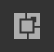Из списка можно выбрать любой плагин и установить, после чего он применит свои настройки к редактору.
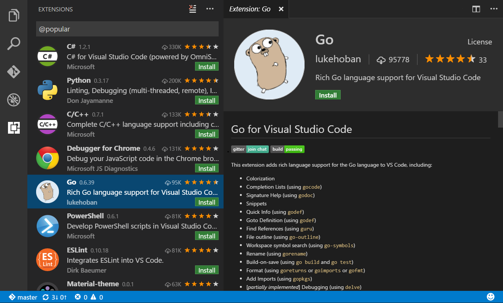{kind=link}
Расширения можно искать введя название или ключевые слова в строке поиска, например Python.

Существует огромное количество расширений для Go, C#, C/C++, Nix, Haskell, Python, JS, TypeScript и др.
Python¶
После установки плагина Python нам становятся доступны многие функции:
- Автодополнение кода
- Проверка синтаксиса
- Отладка
- Подсказки
- Переход к определению функции, класса и прочее
Автодополнение¶
Работает при наборе по нажатию Ctrl + Space.
Проверка синтаксиса¶
Показывает ошибки в коде:
Работает если установлены Python пакеты Pylint, Pep8 или Flake8.
Совет
$ pip install -U --user pylint pep8 flake8
Отладка¶
Встроенный в редактор отладчик позволяет отлаживать код визуально, устанавливать точки останова мышкой и просматривать переменные в отдельном окне. Это похоже на отладку в различных IDE, таких как QtCreator или Wingware.
Также избавляет программиста писать мучительные строки типа printf или import pdb;pdb.set_trace();.
Настройки¶
Настройки хранятся в формате JSON и доступны из меню
File->Preferences->User Settings.
Шрифт¶
Шрифт задается в настройках File->Preferences->User Settings:
// Place your settings in this file to overwrite the default settings
{
// Controls the font size.
"editor.fontSize": 16
}
Автодополнение через <Tab>¶
Более привычно дополнять код по клавише <Tab>. Для этого необходимо
открыть настройки пользователя File->Preferences->User Settings и прописать
опцию editor.tabCompletion:
// Place your settings in this file to overwrite the default settings
{
// Controls the font size.
"editor.fontSize": 16,
// Insert snippets when their prefix matches. Works best when 'quickSuggestions' aren't enabled.
"editor.tabCompletion": true
}
Язык¶
{kind=link}
{kind=link}
Тема¶
Цветовое оформление задается в настройках File->Preferences->Color Theme.
Git¶
Умеет подсвечивать изменения в файлах с предыдущего коммита, выполнять команды git и отслеживать состояние, например какая текущая ветка.
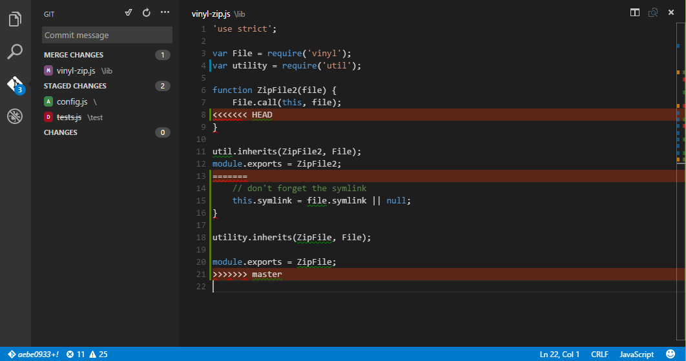{kind=link}
Python скрипты¶
См.также
Visual Studio Code требует для отладки открывать не просто файл, а директорию. Это необходимо, что бы в этом каталоге сохранить локальные настройки редактора. Такая директория будет считаться проектом для редактора.
Для примера, создадим директорию hello1 и откроем в редакторе File->Open
Folder....
Создадим в этой директории файл myapp.py:
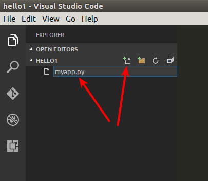Добавим в файл пример с сайта http://trypyramid.com
from wsgiref.simple_server import make_server
from pyramid.config import Configurator
from pyramid.response import Response
def hello_world(request):
return Response('Hello %(name)s!' % request.matchdict)
config = Configurator()
config.add_route('hello', '/hello/{name}')
config.add_view(hello_world, route_name='hello')
app = config.make_wsgi_app()
server = make_server('0.0.0.0', 8080, app)
server.serve_forever()
Для запуска приложения, заходим в режим отладки по нажатию на кнопку:
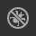.
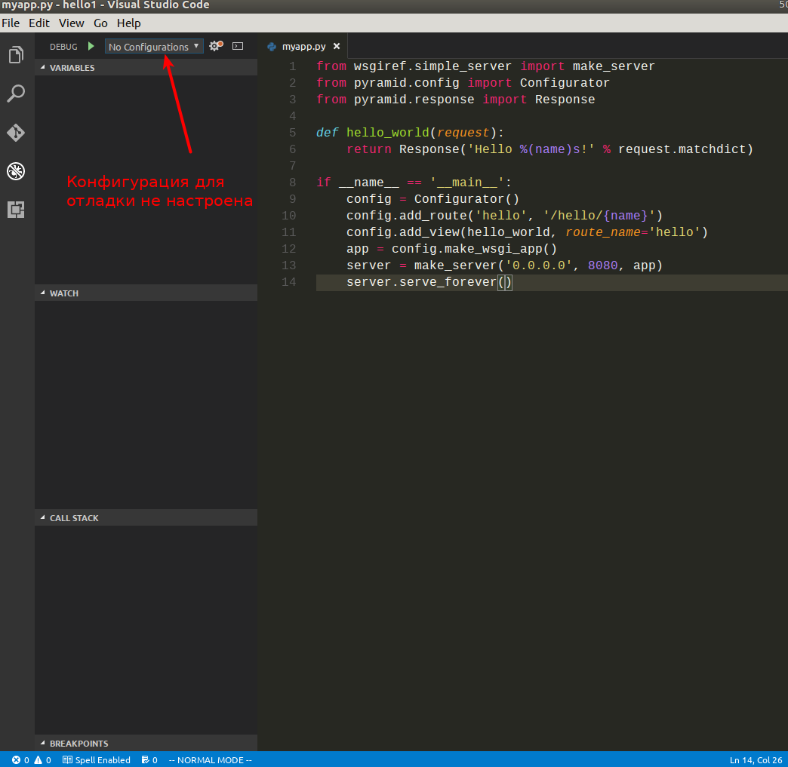{kind=link}
Пока у нас нет никаких настроек отладки/запуска проекта, но при первом запуске редактор предложит их выбрать из существующих шаблонов.
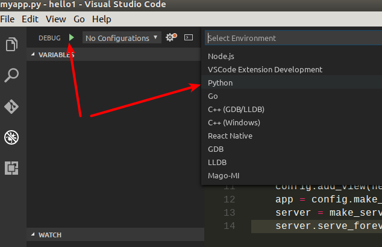Шаблон Python создает настройки в файле launch.json в локальной директории, которые выглядят примерно так:
{
"version": "0.2.0",
"configurations": [
{
"name": "Python",
"type": "python",
"request": "launch",
"stopOnEntry": true,
"pythonPath": "${config.python.pythonPath}",
"program": "${file}",
"debugOptions": [
"WaitOnAbnormalExit",
"WaitOnNormalExit",
"RedirectOutput"
]
},
{
"name": "Python Console App",
"type": "python",
"request": "launch",
"stopOnEntry": true,
"pythonPath": "${config.python.pythonPath}",
"program": "${file}",
"externalConsole": true,
"debugOptions": [
"WaitOnAbnormalExit",
"WaitOnNormalExit"
]
},
{
"name": "Django",
"type": "python",
"request": "launch",
"stopOnEntry": true,
"pythonPath": "${config.python.pythonPath}",
"program": "${workspaceRoot}/manage.py",
"args": [
"runserver",
"--noreload"
],
"debugOptions": [
"WaitOnAbnormalExit",
"WaitOnNormalExit",
"RedirectOutput",
"DjangoDebugging"
]
},
{
"name": "Watson",
"type": "python",
"request": "launch",
"stopOnEntry": true,
"pythonPath": "${config.python.pythonPath}",
"program": "${workspaceRoot}/console.py",
"args": [
"dev",
"runserver",
"--noreload=True"
],
"debugOptions": [
"WaitOnAbnormalExit",
"WaitOnNormalExit",
"RedirectOutput"
]
},
{
"name": "Attach",
"type": "python",
"request": "attach",
"localRoot": "${workspaceRoot}",
"remoteRoot": "${workspaceRoot}",
"port": 3000,
"secret": "my_secret",
"host": "localhost"
}
]
}
Это универсальный шаблон, который добавляет несколько вариантов запуска
приложений. Нас будет интересовать первый вариант Python, просто
запускающий python файл.
Запущенное приложение останавливается на первой строчке, что позволяет нам продолжать выполнение программы по шагам.
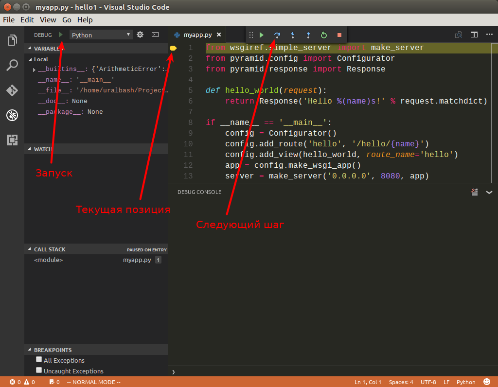{kind=link}
После выполнения второй строки, интерпретатор выдаст ошибку ImportError: No
module named pyramid.config. Это происходит из-за того что в нашем Python
окружении не установлен модуль pyramid.
{kind=link}
Решить эту проблему можно двумя способами:
Установить Pyramid в глобальное окружение.
$ pip install --user pyramid
Создать виртуальное окружение, установить в нем Pyramid и прописать его в настройках Visual Studio Code.
См.также
Как создать virtualenv
Создаем виртуальное окружение:
$ cd /path/to/hello1/ $ pyvenv hello1_env $ source ./hello1_env/bin/activate
Устанавливаем Pyramid:
(hello1_env)$ pip install pyramid
Прописываем путь до виртуального окружения в настройках проекта Visual Studio Code (файл launch.json):
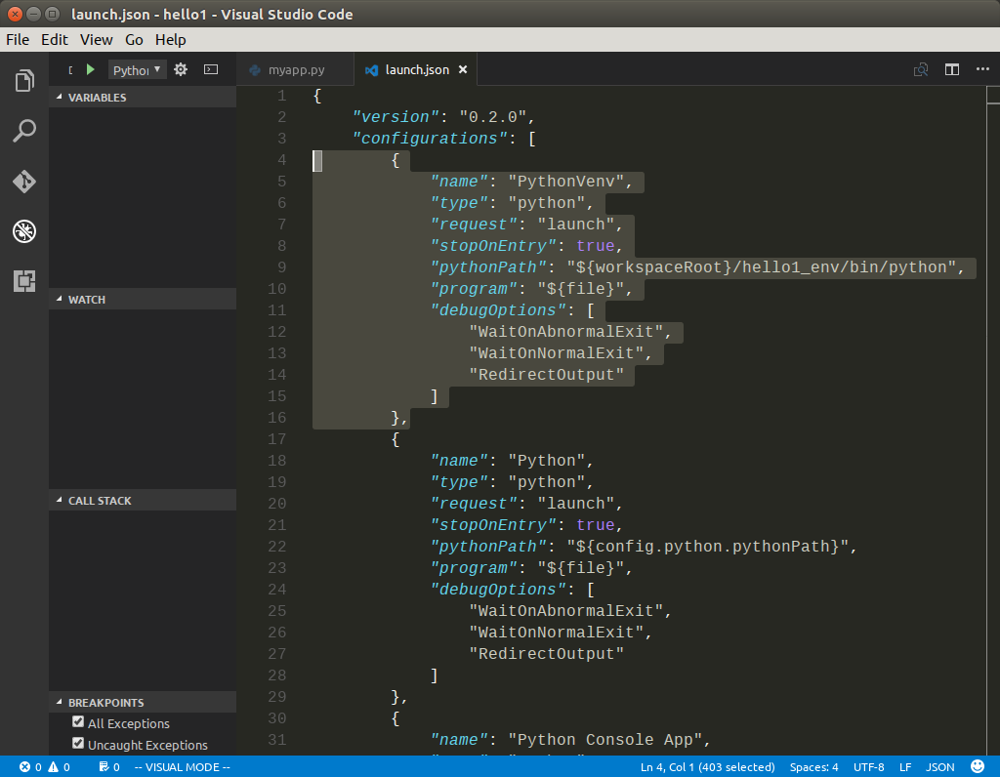{ "name": "PythonVenv", "type": "python", "request": "launch", "stopOnEntry": true, "pythonPath": "${workspaceRoot}/hello1_env/bin/python", "program": "${file}", "debugOptions": [ "WaitOnAbnormalExit", "WaitOnNormalExit", "RedirectOutput" ] }
{kind=link}
После этого появится возможность запускать наш скрипт в локальном виртуальном окружении. Запущенная программа будет доступна по адресу http://localhost:8080/hello/foo. В консоле отладчика можно наблюдать ее вывод.
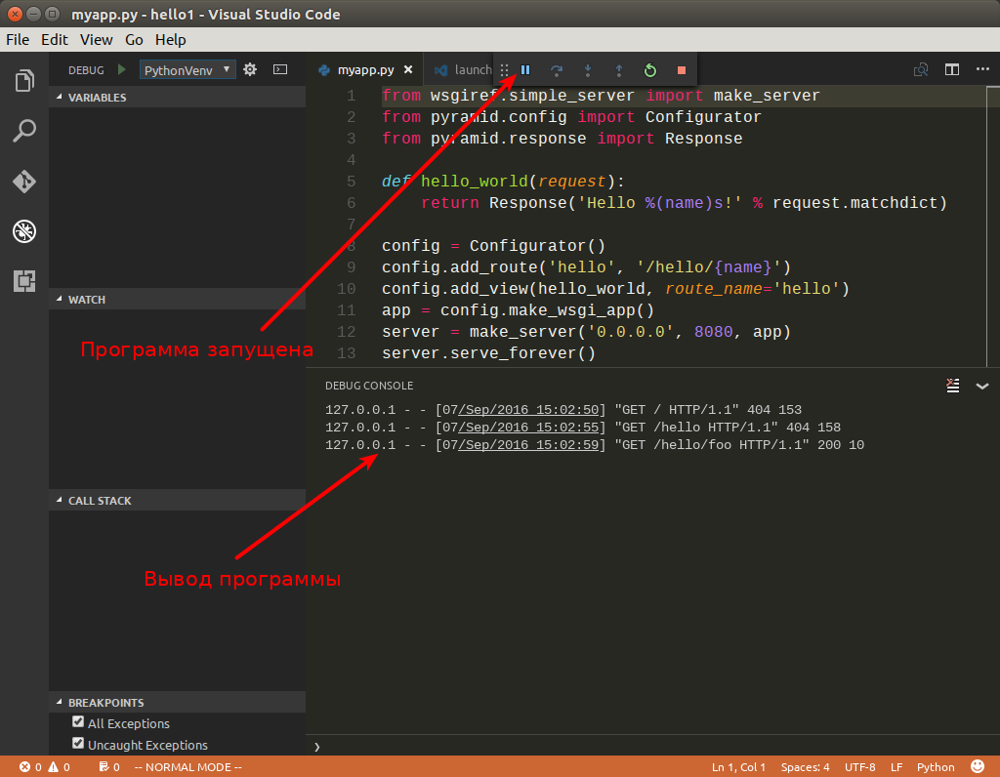{kind=link}
Поставим точку останова внутри функции hello_world, в строке 6. Это
позволит нам остановить программу при запуске этой функции. После запуска,
программа будет нормально работать, пока мы не зайдем по адресу
http://localhost:8080/hello/foo, в этом случае запустится функция
hello_world и выполнение программы прервется, до тех пор пока мы ее не
продолжим вручную.
{kind=link}
Примерно так выглядит процесс разработки и отладки программ на Python. Осталось только инициализировать git репозиторий и выложить проект на https://github.com.
Инициализируем репозиторий:
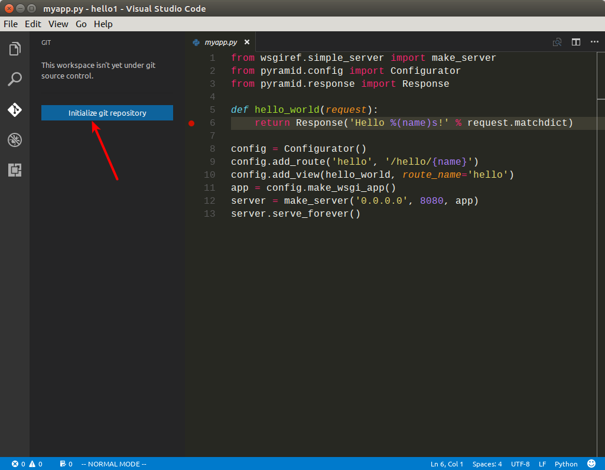Добавим файл
.gitignore:Для этого нам потребуется скопировать содержимое https://www.gitignore.io/api/visualstudiocode,python в файл
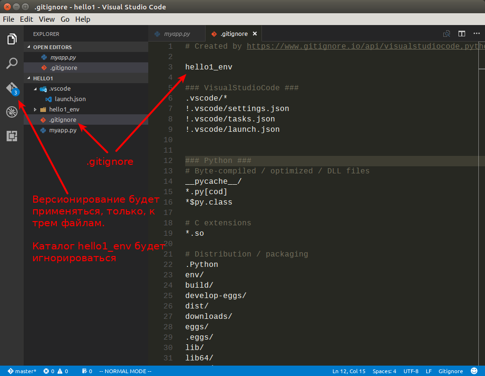.gitignoreи добавить туда директориюhello1_env, что бы она не участвовала в процессе создания версий.# Created by https://www.gitignore.io/api/visualstudiocode,python hello1_env ### VisualStudioCode ### .vscode/* !.vscode/settings.json !.vscode/tasks.json !.vscode/launch.json ### Python ### # Byte-compiled / optimized / DLL files __pycache__/ *.py[cod] ...Создаем первый коммит
Для создания коммита требуется ввести комментарий и нажать на кнопку в виде галочки.
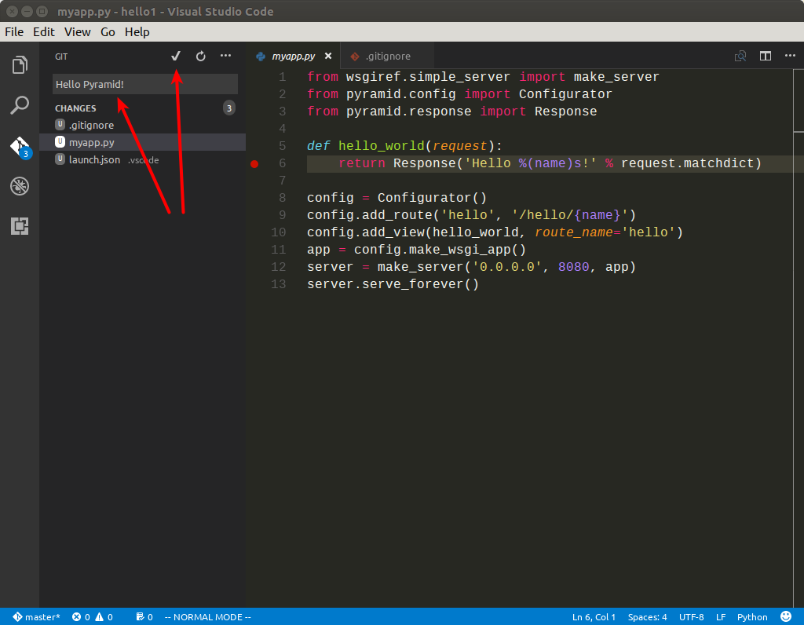Отправляем изменения на https://github.com
- Добавляем плагин Git Easy в проект
- Создаем репозиторий на GitHub
Прописываем путь до гитхаба в нашем проекте, при помощи команды
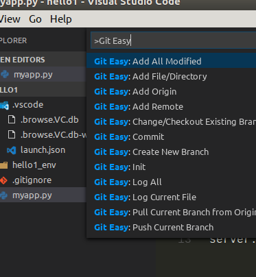 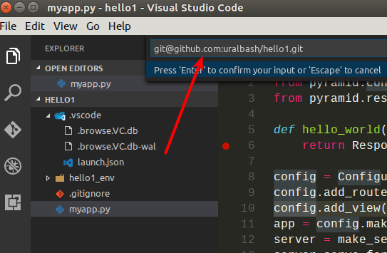Git Easy:Add OrignОтправляем изменения на GitHub, при помощи команды
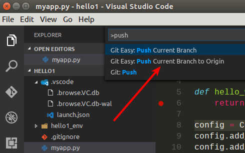Git Easy:Push Current Branch to OriginПри успешном выполнении команды, мы должны увидеть сообщение типа:
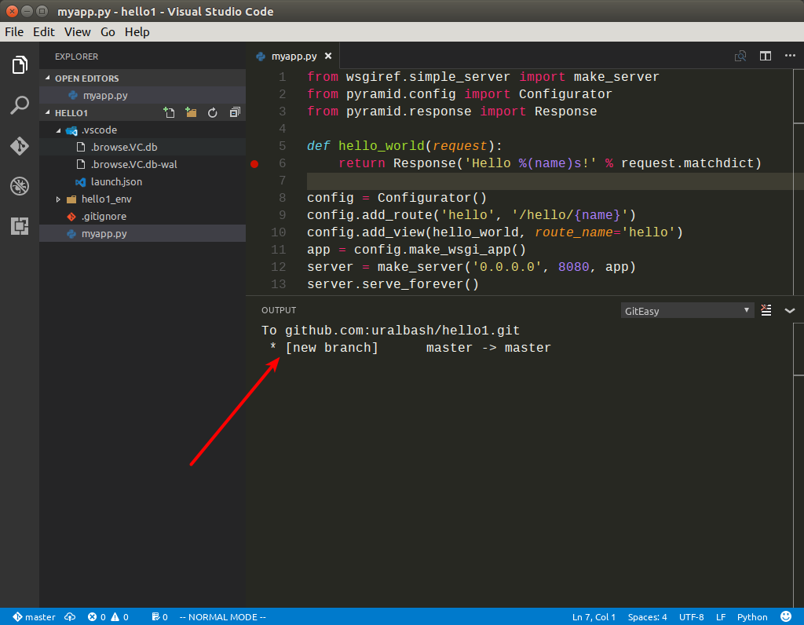To github.com:uralbash/hello1.git * [new branch] master -> master
Файлы будут доступны по адресу https://github.com/uralbash/hello1
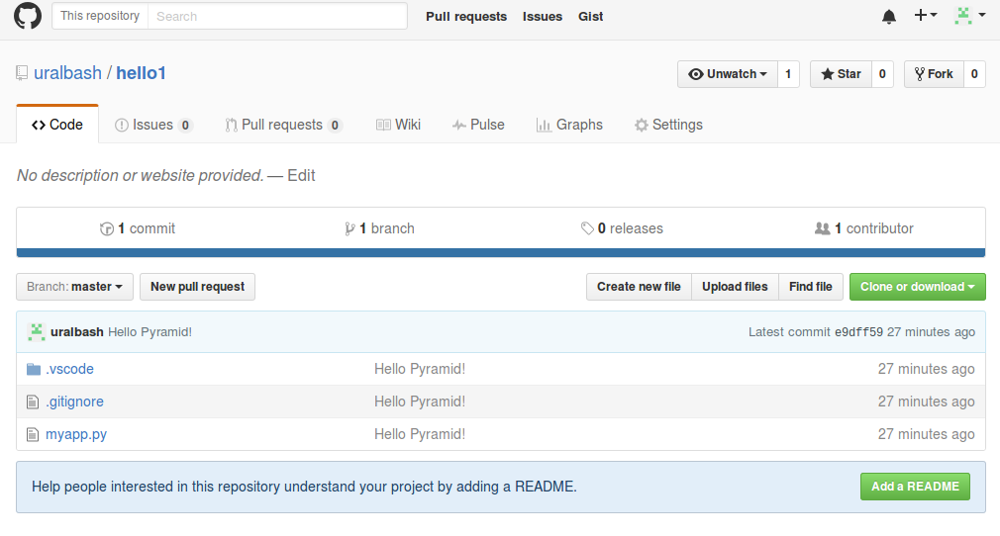
{kind=link}
{kind=link}
{kind=link}
{kind=link}
{kind=link}
Для того что бы проверка синтаксиса заработала, необходимо создать файл
.vscode/settings.json и переопределить в нем глобальные настройки для
нашего проекта:
{
"editor.fontSize": 18,
//Python
"python.pythonPath": "${workspaceRoot}/hello1_env/bin/python",
// Whether to lint Python files using pylint.
"python.linting.pylintEnabled": true,
// Whether to lint Python files using pep8
"python.linting.pep8Enabled": true,
// Whether to lint Python files using flake8
"python.linting.flake8Enabled": true
}
Pyramid¶
Фреймворк Pyramid имеет несколько стартовых шаблонов, которые нужны для того, что бы не начинать писать код с нуля. Рассмотрим как создать шаблон с БД sqlite + SQLAlchemy и настроить его в Visual Studio Code.
Для начала создадим директорию hello2 и виртуальное окружение hello2_env:
$ mkdir hello2
$ cd hello2/
$ pyvenv hello2_env
$ source hello2_env/bin/activate
$ pip install pyramid
После установки Pyramid, в окружении появляется команда pcreate. С ее
помощью создадим проект по шаблону:
$ pcreate -t alchemy .
$ ls
CHANGES.txt development.ini hello2 hello2_env MANIFEST.in production.ini pytest.ini README.txt setup.py
Устанавливаем его как Python пакет:
$ pip install -e .
$ pserve development.ini
Starting server in PID 17311.
Serving on http://localhost:6543
После запуска, становится доступен адрес http://localhost:6543
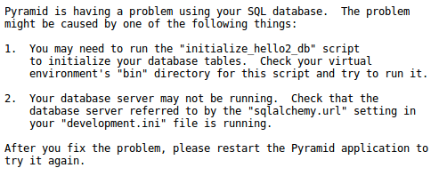Но так-как БД еще не создана, отображается страница с подсказкой как ее инициализировать:
$ initialize_hello2_db development.ini
Теперь мы увидим стартовую страницу шаблона alchemy.
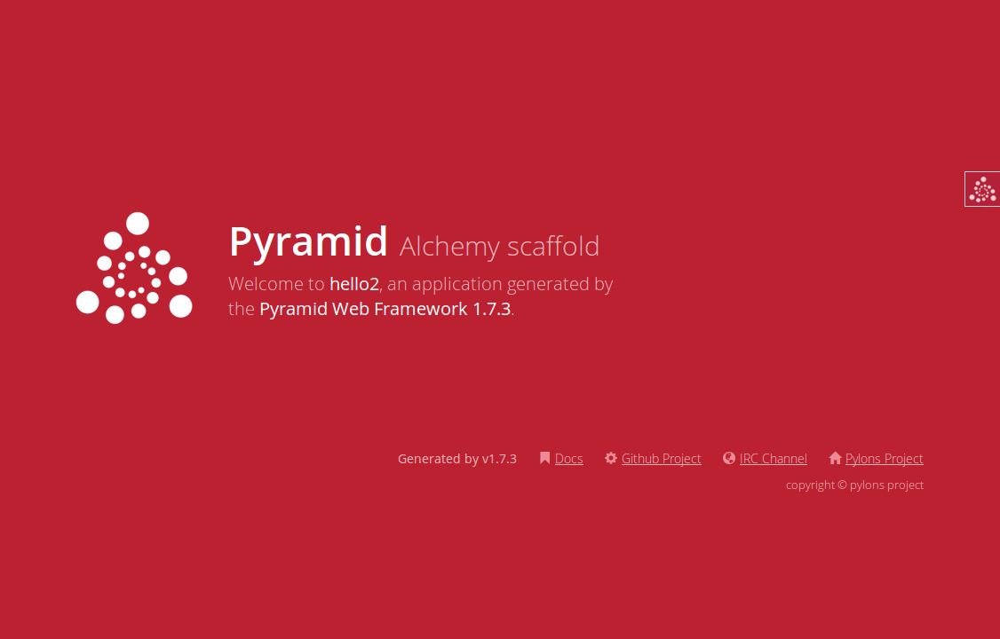{kind=link}
Проект на пирамиде запускается при помощи утилиты pserve. Добавим
конфигурацию для Pyramid в файл настроек launch.json, что бы можно было
запускать/отлаживать приложение из редактора:
{
"version": "0.2.0",
"configurations": [{
"name": "Pyramid",
"type": "python",
"request": "launch",
"stopOnEntry": true,
"pythonPath": "${workspaceRoot}/hello2_env/bin/python",
"program": "${workspaceRoot}/hello2_env/bin/pserve",
"args": ["${workspaceRoot}/development.ini"],
"debugOptions": [
"WaitOnNormalExit",
"RedirectOutput"
]
}]
}
Попробуем запустить:
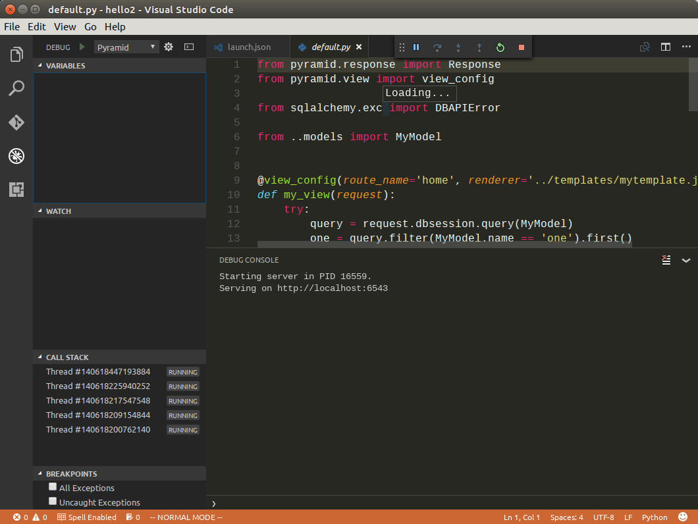{kind=link}
Поставим точку останова в функции my_view в файле
hello2/views/default.py.
{kind=link}
После обновления страницы http://localhost:6543 в браузере, программа остановит свое выполнение в этой точке, а браузер будет ждать пока мы не закончим отладку и не продолжим выполнение вручную.
{kind=link}
Итог¶
Я, конечно, использую Vim, но советую Visual Studio Code, особенно тем кто не знает что выбрать. Очень, оказался, самодостаточный редактор, git, дбаггер, плагины, vi-мод. Ай да Микрософт!